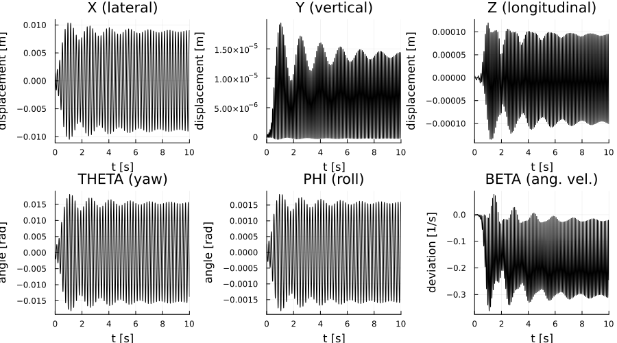
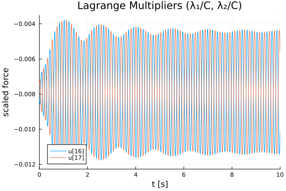
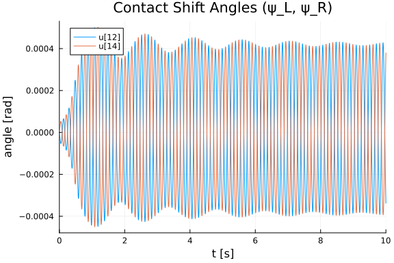
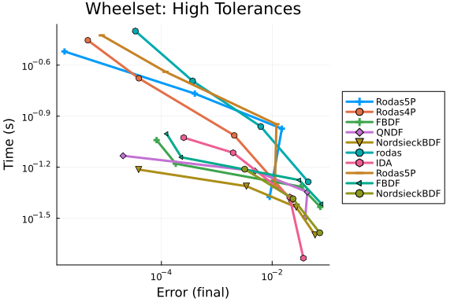
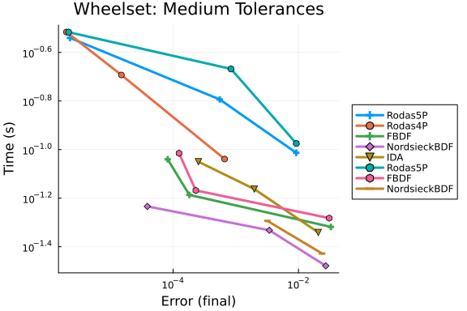
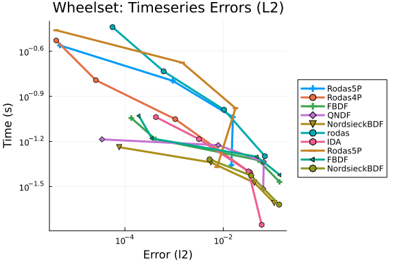
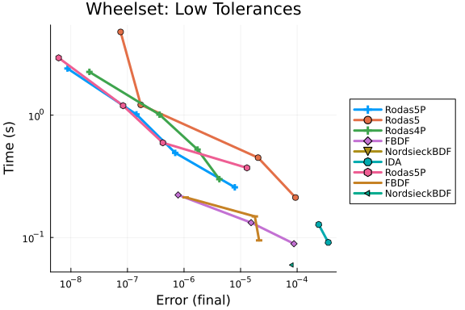
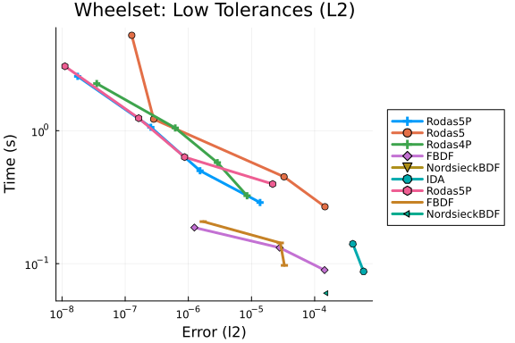

Wheelset DAE Work-Precision Diagrams
This is a benchmark of the Wheelset problem, an index-2 DAE of dimension 17 from the IVP Test Set (Simeon, Führer, Rentrop 1995).
The wheelset models a railway wheel pair on a track, exhibiting the hunting motion — a lateral oscillation that is a well-known phenomenon in railway vehicle dynamics. The system involves friction, contact mechanics, stiffness, and nonlinear constraints that make analytical elimination of constraints impractical.
Variables (17 state variables):
- 5 positions: x (lateral), y (vertical), z (longitudinal), θ (yaw), φ (roll)
- 5 velocities: ẋ, ẏ, ż, θ̇, φ̇
- 1 angular velocity deviation: β̇
- 4 contact coordinates: ψL, ξL (left), ψR, ξR (right)
- 2 Lagrange multipliers: λ₁, λ₂ (scaled by C = 10⁴)
We benchmark three formulations of this problem:
- DAE Residual Form:
F(du, u, t) = 0, solved with IDA (Sundials). - Mass-Matrix ODE Form:
M·du/dt = f(u, t), solved with Rosenbrock-W and BDF methods. The mass matrix is position-dependent (through φ) and frozen at t = 0. - ModelingToolkit Structural Simplified: The residual function is wrapped via
@register_array_symbolicand converted to anODESystem. MTK algebraically eliminates the mass-matrix coefficients so the solver sees an explicit ODE + algebraic constraints.
The mass matrix depends on the roll angle φ through cos(φ) and sin(φ) in the Euler equations. Since φ remains small throughout the integration (≈ 10⁻³ rad), freezing the mass matrix at t = 0 introduces negligible error.
Reference: Simeon, B., Führer, C., Rentrop, P.: Differential-algebraic equations in vehicle system dynamics. Surv. Math. Ind., 1:1–37 (1991).
using OrdinaryDiffEq, DiffEqDevTools, Sundials, ODEInterfaceDiffEq,
Plots, DASSL, DASKR, ModelingToolkit
using OrdinaryDiffEqBDF, OrdinaryDiffEqFIRK, OrdinaryDiffEqRosenbrock
using ModelingToolkit: t_nounits as t, D_nounits as D
using LinearAlgebraPhysical Parameters
const MR = 16.08 # mass of wheelset [kg]
const GG = 9.81 # gravitational acceleration [m/s²]
const V0 = 30.0 # nominal velocity [m/s]
const RN0 = 0.1 # nominal rolling radius [m]
const LI1 = 0.0605 # lateral moment of inertia [kg·m²]
const LI2 = 0.366 # vertical moment of inertia [kg·m²]
const MA = 0.0 # mass of wagon body [kg]
const HA = 0.2 # height of wagon body [m]
const MU = 0.12 # friction coefficient
const XL = 0.19 # width of wheelset / 2 [m]
const CX = 6400.0 # lateral spring constant [N/m]
const CZ = 6400.0 # longitudinal spring constant [N/m]
const FA0 = 0.0 # propulsion force [N]
const LA0 = 0.0 # propulsion moment [kg·m²]
const ALPHA0 = 0.0 # track geometry parameter [rad]
const S0 = 0.0 # track curvature parameter
const OMEGA0 = V0 / RN0 # nominal angular velocity [1/s]
# Wheel profile constants
const DELTA0 = 0.0262 # cone angle / 2 [rad]
const AR = 0.1506 # gauge / 2 [m]
const TAN_D0 = tan(DELTA0)
const SIN_D0 = sin(DELTA0)
const COS_D0 = cos(DELTA0)
# Rail profile constants
const RS = 0.06 # rail radius [m]
const SIR = SIN_D0 * RS
# Creep force constants
const E_CRP = 1.3537956 # parameter for contact ellipse
const G_CRP = 0.7115218 # parameter for contact ellipse
const SIGMA = 0.28 # Poisson-like parameter
const GM = 7.92e10 # glide module [N/m²]
const C11 = 4.72772197 # Kalker coefficient
const C22 = 4.27526987 # Kalker coefficient
const C23 = 1.97203505 # Kalker coefficient
# Scaling factor for Lagrange multipliers
const C_SCALE = 1.0e4
const TOL_CONTACT = 1.0e-8 # tolerance for contact determinant1.0e-8Profile Functions
The wheel profile is a cone and the rail profile is a circle.
function wheelp(x)
xabs = abs(x)
rx = RN0 + TAN_D0 * (AR - xabs)
drx = sign(x) * (-TAN_D0)
d2rx = 0.0
d3rx = 0.0
return rx, drx, d2rx, d3rx
end
function railp(xg)
xabs = abs(xg)
arg = RS^2 - (xabs - AR - SIR)^2
arg = max(arg, zero(arg)) # Prevent negative sqrt during solver probing
tt = sqrt(arg)
tt = max(tt, eps(typeof(tt))) # Prevent division by zero
sx = tt - RN0 - COS_D0 * RS
dsx = sign(xg) * (-(xabs - AR - SIR)) / tt
d2sx = -RS^2 / tt^3
d3sx = 3 * RS^2 / tt^4 * dsx
return sx, dsx, d2sx, d3sx
endrailp (generic function with 1 method)Constraint Jacobian
\[G_p\]
maps velocity to constraint velocity. Used in both the index-2 constraint and the normal force computation.
function constm(xr, rx, dgx, sit, cot, sip, cop, sips, cops)
q1 = dgx
q2 = -one(dgx)
q3 = zero(dgx)
q4 = dgx * (rx * (-cot * sips - cops * sip * sit) - cop * sit * xr)
q5 = -(cops * rx * sip) - cop * xr + dgx * (cop * cops * cot * rx - cot * sip * xr)
return (q1, q2, q3, q4, q5)
endconstm (generic function with 1 method)Creep Forces
The creep forces model the wheel-rail contact friction using Kalker's theory.
function creep_forces(y, fnl, fnr, rxl, rxr, drxl, drxr, d2rxl, d2rxr,
dgxl, dgxr, d2gxl, d2gxr, deltal, deltar)
xx = y[1]; yy = y[2]; zz = y[3]
sip = sin(y[5]); cop = cos(y[5])
xxp = y[6]; yyp = y[7]; zzp = y[8]
tetap = y[9]; phip = y[10]; betap = y[11]
sisl = sin(y[12]); cosl = cos(y[12]); xrl = y[13]
sisr = sin(y[14]); cosr = cos(y[14]); xrr = y[15]
sia = sin(ALPHA0); coa = cos(ALPHA0)
sidl = sin(deltal); codl = cos(deltal)
sidr = sin(deltar); codr = cos(deltar)
sitl = sin(y[4] / codl); cotl = cos(y[4] / codl)
sitr = sin(y[4] / codr); cotr = cos(y[4] / codr)
# Contact ellipses — left
rr = rxl * sqrt(1.0 + drxl^2)
rhog = -d2gxl / (1.0 + dgxl^2)^1.5
rhor = d2rxl / (1.0 + drxl^2)^1.5
aa = 0.5 / rr
bb = 0.5 * (rhog + rhor)
wabs = abs(fnl) * 3.0
cl_ = ((wabs * (1.0 - SIGMA) * E_CRP) /
(2.0 * π * (aa + bb) * GM * sqrt(G_CRP)))^(1.0 / 3.0)
# Contact ellipses — right
rr = rxr * sqrt(1.0 + drxr^2)
rhog = -d2gxr / (1.0 + dgxr^2)^1.5
rhor = d2rxr / (1.0 + drxr^2)^1.5
aa = 0.5 / rr
bb = 0.5 * (rhog + rhor)
wabs = abs(fnr) * 3.0
cr_ = ((wabs * (1.0 - SIGMA) * E_CRP) /
(2.0 * π * (aa + bb) * GM * sqrt(G_CRP)))^(1.0 / 3.0)
# Creepage left contact point — relative velocity
wvk1 = -(OMEGA0 + betap) * rxl * (sitl * cosl + cotl * sip * sisl) +
V0 * S0 * coa * (rxl * (sitl * sip * cosl + cotl * sisl) +
xrl * sitl * cop - zz) +
xxp - tetap * (rxl * (sitl * sip * cosl + cotl * sisl) +
xrl * sitl * cop) -
phip * cotl * (xrl * sip - rxl * cop * cosl)
wvk2 = (OMEGA0 + betap) * rxl * cop * sisl +
V0 * S0 * sia * (zz - xrl * sitl * cop -
rxl * (sitl * sip * cosl + cotl * sisl)) +
yyp + phip * (xrl * cop + rxl * sip * cosl)
wvk3 = -(OMEGA0 + betap) * rxl * (cotl * cosl - sitl * sip * sisl) + V0 + zzp +
V0 * S0 * (xx * coa - yy * sia +
coa * (rxl * (cotl * sip * cosl - sitl * sisl) + xrl * cotl * cop) +
sia * (rxl * cop * cosl - xrl * sip)) -
tetap * (xrl * cotl * cop + rxl * (cotl * sip * cosl - sitl * sisl)) +
phip * sitl * (xrl * sip - rxl * cop * cosl)
# Rolling velocity left
wvk4 = wvk1 - 2.0 * xxp + 2.0 * V0 * S0 * zz * coa
wvk5 = wvk2 - 2.0 * yyp - 2.0 * V0 * S0 * zz * sia
wvk6 = wvk3 - 2.0 * zzp - 2.0 * V0 * S0 * (xx * coa - yy * sia) - 2.0 * V0
wvr = 0.5 * sqrt(wvk4^2 + wvk5^2 + wvk6^2)
# Creepage left
wnux = (sitl * wvk1 + cotl * wvk3) / wvr
wnuy = (cotl * codl * wvk1 + sidl * wvk2 - sitl * codl * wvk3) / wvr
wphis = (-sidl * (OMEGA0 + betap - V0 * S0 * sia) +
codl * (tetap - V0 * S0 * coa)) / wvr
# Creep forces left
wt_l = MU * fnl
tx = -wt_l * tanh(GM * cl_^2 * C11 * wnux / wt_l)
ty = -wt_l * tanh(GM * cl_^2 * C22 * wnuy / wt_l + GM * cl_^3 * C23 * wphis / wt_l)
sqt = sqrt(tx^2 + ty^2)
if sqt^2 > wt_l^2
tx = tx * abs(wt_l) / sqt
ty = ty * abs(wt_l) / sqt
end
tl1 = sitl * tx + cotl * codl * ty
tl2 = sidl * ty
tl3 = cotl * tx - sitl * codl * ty
# Creepage right contact point — relative velocity
wvk1 = -(OMEGA0 + betap) * rxr * (sitr * cosr + cotr * sip * sisr) +
V0 * S0 * coa * (rxr * (sitr * sip * cosr + cotr * sisr) +
xrr * sitr * cop - zz) +
xxp - tetap * (rxr * (sitr * sip * cosr + cotr * sisr) +
xrr * sitr * cop) -
phip * cotr * (xrr * sip - rxr * cop * cosr)
wvk2 = (OMEGA0 + betap) * rxr * cop * sisr +
V0 * S0 * sia * (zz - xrr * sitr * cop -
rxr * (sitr * sip * cosr + cotr * sisr)) +
yyp + phip * (xrr * cop + rxr * sip * cosr)
wvk3 = -(OMEGA0 + betap) * rxr * (cotr * cosr - sitr * sip * sisr) + V0 + zzp +
V0 * S0 * (xx * coa - yy * sia +
coa * (rxr * (cotr * sip * cosr - sitr * sisr) + xrr * cotr * cop) +
sia * (rxr * cop * cosr - xrr * sip)) -
tetap * (xrr * cotr * cop + rxr * (cotr * sip * cosr - sitr * sisr)) +
phip * sitr * (xrr * sip - rxr * cop * cosr)
# Rolling velocity right
wvk4 = wvk1 - 2.0 * xxp + 2.0 * V0 * S0 * zz * coa
wvk5 = wvk2 - 2.0 * yyp - 2.0 * V0 * S0 * zz * sia
wvk6 = wvk3 - 2.0 * zzp - 2.0 * V0 * S0 * (xx * coa - yy * sia) - 2.0 * V0
wvr = 0.5 * sqrt(wvk4^2 + wvk5^2 + wvk6^2)
# Creepage right
wnux = (sitr * wvk1 + cotr * wvk3) / wvr
wnuy = (cotr * codr * wvk1 - sidr * wvk2 - sitr * codr * wvk3) / wvr
wphis = (sidr * (OMEGA0 + betap - V0 * S0 * sia) +
codr * (tetap - V0 * S0 * coa)) / wvr
# Creep forces right
wt_r = MU * fnr
tx = -wt_r * tanh(GM * cr_^2 * C11 * wnux / wt_r)
ty = -wt_r * tanh(GM * cr_^2 * C22 * wnuy / wt_r + GM * cr_^3 * C23 * wphis / wt_r)
sqt = sqrt(tx^2 + ty^2)
if sqt^2 > wt_r^2
tx = tx * abs(wt_r) / sqt
ty = ty * abs(wt_r) / sqt
end
tr1 = sitr * tx + cotr * codr * ty
tr2 = -sidr * ty
tr3 = cotr * tx - sitr * codr * ty
return (tl1, tl2, tl3), (tr1, tr2, tr3)
endcreep_forces (generic function with 1 method)Initial Conditions
The consistent initial values from the IVP Test Set (revised by de Swart, 1997).
# Variable ordering:
# [1:5] = p = (x, y, z, θ, φ) — positions
# [6:10] = v = (ẋ, ẏ, ż, θ̇, φ̇) — velocities
# [11] = β̇ — angular velocity deviation
# [12:13] = (ψ_L, ξ_L) — left contact coordinates
# [14:15] = (ψ_R, ξ_R) — right contact coordinates
# [16:17] = (λ₁, λ₂) / C — scaled Lagrange multipliers
u0 = zeros(17)
u0[1] = 0.14941e-2 # x
u0[2] = 0.40089e-6 # y
u0[3] = 0.11241e-5 # z
u0[4] = -0.28573e-3 # θ
u0[5] = 0.26459e-3 # φ
# u0[6:10] = 0 # velocities
# u0[11] = 0 # β̇
u0[12] = -7.4122380357667139e-6 # ψ_L
u0[13] = -0.1521364296121248 # ξ_L
u0[14] = 7.5634406395172940e-6 # ψ_R
u0[15] = 0.1490635714733819 # ξ_R
u0[16] = -0.83593e-2 # λ₁/C
u0[17] = -0.74144e-2 # λ₂/C
# Consistent initial derivatives (IVP Test Set reference values)
du0_ref = zeros(17)
# du0_ref[1:5] = 0 # dp/dt = v = 0
du0_ref[6] = -1.975258894011285 # ẍ
du0_ref[7] = -1.0898297102811276e-3 # ÿ
du0_ref[8] = 7.8855083626142589e-2 # z̈
du0_ref[9] = -5.533362821731549 # θ̈
du0_ref[10] = -0.3487021489546511 # φ̈
du0_ref[11] = -2.132968724380927 # β̈
# du0_ref[12:17] = 0 # algebraic variables
tspan = (0.0, 10.0)(0.0, 10.0)Core Residual Computation
This is a faithful port of the Fortran RESWHS subroutine. It computes the residual δ = F(dy, y, t) for all 17 equations.
function wheelset_residual!(delta, dy, y)
# Unpack state — use the internal ordering of reswhs (after swap)
xx = y[1]; yy = y[2]; zz = y[3]
teta = y[4]; phi = y[5]
xxp = y[6]; yyp = y[7]; zzp = y[8]
tetap = y[9]; phip = y[10]; betap = y[11]
# Lagrange multipliers: y[16]=λ₁/C pairs with RIGHT constraint,
# y[17]=λ₂/C pairs with LEFT constraint (matching Fortran RESWHS convention)
e1 = y[17] * C_SCALE
e2 = y[16] * C_SCALE
# Contact coordinates
psil = y[12]; xrl = y[13]
psir = y[14]; xrr = y[15]
# Accelerations from dy
xxpp = dy[6]; yypp = dy[7]; zzpp = dy[8]
tetapp = dy[9]; phipp = dy[10]; betapp = dy[11]
# Track parameters (straight track)
s_trk = S0; alpha_trk = ALPHA0
# Trigonometric quantities
sit = sin(teta); cot_ = cos(teta)
sip = sin(phi); cop = cos(phi)
sia = sin(alpha_trk); coa = cos(alpha_trk)
sisl = sin(psil); cosl = cos(psil)
sisr = sin(psir); cosr = cos(psir)
# Evaluate wheel profile — left
rxl, drxl, d2rxl, d3rxl = wheelp(xrl)
xgl = xx + xrl * cot_ * cop + rxl * (cot_ * sip * cosl - sit * sisl)
# Evaluate rail profile — left
gxl, dgxl, d2gxl, d3gxl = railp(xgl)
# Evaluate wheel profile — right
rxr, drxr, d2rxr, d3rxr = wheelp(xrr)
xgr = xx + xrr * cot_ * cop + rxr * (cot_ * sip * cosr - sit * sisr)
# Evaluate rail profile — right
gxr, dgxr, d2gxr, d3gxr = railp(xgr)
# Constraint Jacobian
ql = constm(xrl, rxl, dgxl, sit, cot_, sip, cop, sisl, cosl)
qr = constm(xrr, rxr, dgxr, sit, cot_, sip, cop, sisr, cosr)
# Contact angles (single-argument atan matching Fortran ATAN(W1/W2))
w1 = (drxl * cop - sip * cosl) * cot_ + sisl * sit
w2 = -drxl * sip - cosl * cop
deltal = atan(w1 / w2)
w1 = (drxr * cop - sip * cosr) * cot_ + sisr * sit
w2 = drxr * sip + cosr * cop
deltar = atan(w1 / w2)
sidl = sin(deltal); codl = cos(deltal)
sidr = sin(deltar); codr = cos(deltar)
# Normal forces N(p,q,λ)
deter = -sidl * codr - sidr * codl
w1 = ql[1] * e1 + qr[1] * e2
w2 = ql[2] * e1 + qr[2] * e2
fnl = ( codr * w1 - sidr * w2) / deter
fnr = (-codl * w1 - sidl * w2) / deter
# Build y_internal for creep force computation (uses [12:15] as contact coords)
y_int = copy(y)
TL, TR = creep_forces(y_int, fnl, fnr, rxl, rxr, drxl, drxr, d2rxl, d2rxr,
dgxl, dgxr, d2gxl, d2gxr, deltal, deltar)
# Forces of chassis
fq1 = MA * GG * (V0^2 * s_trk / GG - tan(alpha_trk)) / coa
fq2 = -MA * GG * coa * (V0^2 * s_trk * tan(alpha_trk) / GG + 1.0)
fq3 = -2.0 * CZ * zz
lm1 = 0.0
lm2 = -2.0 * XL^2 * CZ * teta
lm3 = -HA * fq1
# ── Residual equations ──
# Kinematics: dp/dt = v
delta[1] = xxp - dy[1]
delta[2] = yyp - dy[2]
delta[3] = zzp - dy[3]
delta[4] = tetap - dy[4]
delta[5] = phip - dy[5]
# Newton's law (momentum equations)
delta[6] = MR * (-xxpp + V0^2 * s_trk * coa * (1.0 + (xx * coa - yy * sia) * s_trk) +
2.0 * V0 * s_trk * coa * zzp) +
TL[1] + TR[1] + fq1 - MR * GG * sia +
ql[1] * e1 + qr[1] * e2 - 2.0 * CX * xx
delta[7] = MR * (-yypp - V0^2 * s_trk * sia * (1.0 + (xx * coa - yy * sia) * s_trk) -
2.0 * V0 * s_trk * sia * zzp) +
TL[2] + TR[2] + fq2 - MR * GG * coa +
ql[2] * e1 + qr[2] * e2
delta[8] = MR * (-zzpp - 2.0 * V0 * s_trk * (xxp * coa - yyp * sia) +
V0^2 * s_trk^2 * zz) +
TL[3] + TR[3] + FA0 + fq3 +
ql[3] * e1 + qr[3] * e2
# Euler's law (spin equations)
w1 = -(xrl * sit + rxl * sisl * cot_ * cop) * TL[1] - rxl * sisl * sip * TL[2] +
(-xrl * cot_ + rxl * sisl * sit * cop) * TL[3]
w2 = -(xrr * sit + rxr * sisr * cot_ * cop) * TR[1] - rxr * sisr * sip * TR[2] +
(-xrr * cot_ + rxr * sisr * sit * cop) * TR[3]
delta[9] = -LI2 * (tetapp * cop - tetap * phip * sip +
V0 * s_trk * (phip * (sia * cot_ * cop + coa * sip) -
tetap * sia * sit * sip)) -
LI1 * (OMEGA0 + betap) * (phip - V0 * s_trk * sit * sia) -
(LI1 - LI2) * (tetap * sip - V0 * s_trk * (cot_ * cop * sia + sip * coa)) *
(phip - V0 * s_trk * sit * sia) +
w1 + w2 + cop * lm2 - cot_ * sip * lm1 + sit * sip * lm3 +
ql[4] * e1 + qr[4] * e2
w1 = -(xrl * cot_ * sip - rxl * cosl * cot_ * cop) * TL[1] +
(xrl * cop + rxl * cosl * sip) * TL[2] +
(xrl * sit * sip - rxl * cosl * sit * cop) * TL[3]
w2 = -(xrr * cot_ * sip - rxr * cosr * cot_ * cop) * TR[1] +
(xrr * cop + rxr * cosr * sip) * TR[2] +
(xrr * sit * sip - rxr * cosr * sit * cop) * TR[3]
delta[10] = -LI2 * (phipp - tetap * V0 * s_trk * sia * cot_) +
LI1 * (OMEGA0 + betap) * (tetap * cop + V0 * s_trk * (cot_ * sip * sia - cop * coa)) +
(LI1 - LI2) * (tetap * sip - V0 * s_trk * (cot_ * cop * sia + sip * coa)) *
(tetap * cop + V0 * s_trk * (cot_ * sip * sia - cop * coa)) +
w1 + w2 + lm3 + ql[5] * e1 + qr[5] * e2
w1 = -rxl * (cosl * sit + sisl * cot_ * sip) * TL[1] + rxl * sisl * cop * TL[2] -
rxl * (cosl * cot_ - sisl * sit * sip) * TL[3]
w2 = -rxr * (cosr * sit + sisr * cot_ * sip) * TR[1] + rxr * sisr * cop * TR[2] -
rxr * (cosr * cot_ - sisr * sit * sip) * TR[3]
delta[11] = -LI1 * (betapp + tetapp * sip + tetap * phip * cop -
V0 * s_trk * (phip * (coa * cop - sia * cot_ * sip) -
tetap * sia * sit * cop)) +
w1 + w2 + sip * lm2 + LA0
# Position constraints g₂ = 0 (tangent-plane conditions)
# LEFT contact
delta[12] = dgxl * (drxl * sip + cop * cosl) + drxl * cot_ * cop -
cot_ * sip * cosl + sit * sisl
delta[13] = drxl * sit * cop - sit * sip * cosl - cot_ * sisl
# RIGHT contact
delta[14] = dgxr * (drxr * sip + cop * cosr) + drxr * cot_ * cop -
cot_ * sip * cosr + sit * sisr
delta[15] = drxr * sit * cop - sit * sip * cosr - cot_ * sisr
# Velocity constraints dg₁/dp · v = 0
# delta[16] uses qr (RIGHT constraint, determines λ₁ at y[16])
# delta[17] uses ql (LEFT constraint, determines λ₂ at y[17])
delta[16] = zero(eltype(delta))
delta[17] = zero(eltype(delta))
for i in 1:5
delta[16] += qr[i] * y[5+i]
delta[17] += ql[i] * y[5+i]
end
return nothing
endwheelset_residual! (generic function with 1 method)Form 1: DAE Residual Form
For use with DAE solvers (IDA from Sundials, DASSL, DASKR).
function wheelset_dae!(res, du, u, p, t)
wheelset_residual!(res, du, u)
nothing
end
# Differential variables: positions (1:5), velocities (6:10), β̇ (11),
# contact coordinates (12:15) → 15 differential
# Lagrange multipliers (16:17) → 2 algebraic
# But the constraint equations (rows 12-17) are all algebraic
# The mass matrix structure tells us which are differentiated:
# rows 1-5: dp/dt = v → differential
# rows 6-8: MR * dv/dt = ... → differential
# rows 9-10: LI2 * d(tetap,phip)/dt = ... → differential
# row 11: LI1 * d(betap)/dt = ... → differential
# rows 12-17: algebraic constraints → algebraic
differential_vars = [trues(11); falses(6)]
# Compute consistent du0 by evaluating the mass-matrix RHS:
du0 = zeros(17)
du0[1:5] = u0[6:10] # dp/dt = v
let dy_z = zeros(17), delta_z = zeros(17)
wheelset_residual!(delta_z, dy_z, u0)
# M*acc = delta (with dy=0) → acc = M^{-1}*delta
du0[6] = delta_z[6] / MR
du0[7] = delta_z[7] / MR
du0[8] = delta_z[8] / MR
phi0 = u0[5]; cop0 = cos(phi0); sip0 = sin(phi0)
du0[10] = delta_z[10] / LI2
du0[9] = delta_z[9] / (LI2 * cop0)
du0[11] = (delta_z[11] - LI1 * sip0 * du0[9]) / LI1
end
prob_dae = DAEProblem(wheelset_dae!, du0, u0, tspan,
differential_vars = differential_vars)DAEProblem with uType Vector{Float64} and tType Float64. In-place: true
timespan: (0.0, 10.0)
u0: 17-element Vector{Float64}:
0.0014941
4.0089e-7
1.1241e-6
-0.00028573
0.00026459
0.0
0.0
0.0
0.0
0.0
0.0
-7.412238035766714e-6
-0.1521364296121248
7.563440639517294e-6
0.1490635714733819
-0.0083593
-0.0074144
du0: 17-element Vector{Float64}:
0.0
0.0
0.0
0.0
0.0
-1.975258892721335
-0.0010898296993099195
0.07885508390014091
-5.533362828953616
-0.3487021430632947
-2.132968731663389
0.0
0.0
0.0
0.0
0.0
0.0Verify the DAE residual at the initial conditions:
res0 = zeros(17)
wheelset_residual!(res0, du0, u0)
println("DAE residual norm at IC (computed du0): ", norm(res0))
println("Max absolute residual: ", maximum(abs, res0))
# Also verify against IVP Test Set reference du0
res0_ref = zeros(17)
wheelset_residual!(res0_ref, du0_ref, u0)
println("DAE residual norm at IC (IVP ref du0): ", norm(res0_ref))DAE residual norm at IC (computed du0): 3.6215177076743956e-15
Max absolute residual: 3.552713678800501e-15
DAE residual norm at IC (IVP ref du0): 2.1483023182602044e-8Form 2: Mass-Matrix ODE
The DAE is rewritten as M · du/dt = f(u) where M has the block structure:
M = diag(I₅, MR·I₃, M_euler, 0₆)The 3×3 Euler mass sub-block depends on φ through cos(φ) and sin(φ). We freeze it at t = 0.
function build_wheelset_mass_matrix(phi0)
M = zeros(17, 17)
# Kinematic block: dp/dt = v
for i in 1:5
M[i, i] = 1.0
end
# Newton's law: MR * dv/dt = ...
M[6, 6] = MR
M[7, 7] = MR
M[8, 8] = MR
# Euler equations (extracted from the residual coefficients of accelerations)
cop0 = cos(phi0)
sip0 = sin(phi0)
M[9, 9] = LI2 * cop0 # θ̈ coefficient in delta[9]
M[10, 10] = LI2 # φ̈ coefficient in delta[10]
M[11, 9] = LI1 * sip0 # θ̈ coefficient in delta[11]
M[11, 11] = LI1 # β̈ coefficient in delta[11]
# Rows 12-17: algebraic (zero mass)
return M
end
function wheelset_mm!(du, u, p, t)
# Compute the residual F(0, u, t) and rearrange:
# Since F(dy, y, t) = M_terms(dy) + rhs(y,t) = 0
# We want: du such that M*du = f(u)
# Compute residual with zero accelerations
T = eltype(u)
dy_zero = zeros(T, 17)
delta = zeros(T, 17)
wheelset_residual!(delta, dy_zero, u)
# For rows 1-5: delta = v - dy → with dy=0, delta = v → du = v
du[1] = u[6]
du[2] = u[7]
du[3] = u[8]
du[4] = u[9]
du[5] = u[10]
# For rows 6-8: delta = MR*(-acc) + rhs → with acc=0, delta = rhs
# Mass-matrix form: M*acc = rhs = delta
du[6] = delta[6]
du[7] = delta[7]
du[8] = delta[8]
# For rows 9-10: delta = -LI2*(...acc...) + rhs → with acc=0, delta = rhs
du[9] = delta[9]
du[10] = delta[10]
# For row 11: delta = -LI1*(...acc...) + rhs → with acc=0, delta = rhs
du[11] = delta[11]
# For rows 12-17: algebraic → du = delta (constraint violation)
du[12] = delta[12]
du[13] = delta[13]
du[14] = delta[14]
du[15] = delta[15]
du[16] = delta[16]
du[17] = delta[17]
nothing
end
M_wh = build_wheelset_mass_matrix(u0[5])
mmf_wh = ODEFunction(wheelset_mm!, mass_matrix = M_wh)
prob_mm = ODEProblem(mmf_wh, u0, tspan)ODEProblem with uType Vector{Float64} and tType Float64. In-place: true
Non-trivial mass matrix: true
timespan: (0.0, 10.0)
u0: 17-element Vector{Float64}:
0.0014941
4.0089e-7
1.1241e-6
-0.00028573
0.00026459
0.0
0.0
0.0
0.0
0.0
0.0
-7.412238035766714e-6
-0.1521364296121248
7.563440639517294e-6
0.1490635714733819
-0.0083593
-0.0074144Form 3: ModelingToolkit Structural Simplified
The creep force model involves ~200 lines of cascading trigonometric and arithmetic operations with conditional saturation (tanh, abs, sign). This expression tree is too large for MTK's symbolic pipeline: pure symbolic equations cause structural_simplify to hang, and @register_symbolic with 17+ scalar arguments triggers a combinatorial explosion in dispatch generation (3^N method combinations).
Instead we wrap the existing wheelset_residual! as a vector-valued registered function via @register_array_symbolic. This keeps the physics opaque to the symbolic engine while letting MTK build its mass-matrix / ODE structure around it.
function wheelset_rhs_vec(state::AbstractVector)
T = eltype(state)
dy_zero = zeros(T, 17)
delta = zeros(T, 17)
wheelset_residual!(delta, dy_zero, state)
return delta
end
# ndims=1 so promote_symtype is Array{Float64,1} (DataType), not Array{Float64}.
@register_array_symbolic wheelset_rhs_vec(state::AbstractVector) begin
size = (17,)
ndims = 1
eltype = Float64
end
@variables begin
x_w(t) = u0[1]; y_w(t) = u0[2]; z_w(t) = u0[3]
theta_w(t) = u0[4]; phi_w(t) = u0[5]
xp_w(t) = 0.0; yp_w(t) = 0.0; zp_w(t) = 0.0
tetap_w(t) = 0.0; phip_w(t) = 0.0; betap_w(t) = 0.0
psiL_w(t) = u0[12]; xiL_w(t) = u0[13]
psiR_w(t) = u0[14]; xiR_w(t) = u0[15]
lam1_w(t) = u0[16]; lam2_w(t) = u0[17]
end
state_vec = [x_w, y_w, z_w, theta_w, phi_w, xp_w, yp_w, zp_w, tetap_w, phip_w,
betap_w, psiL_w, xiL_w, psiR_w, xiR_w, lam1_w, lam2_w]
delta_sym = wheelset_rhs_vec(state_vec)
phi0_mtk = u0[5]
eqs_mtk = [
# Kinematics (identity mass)
D(x_w) ~ delta_sym[1],
D(y_w) ~ delta_sym[2],
D(z_w) ~ delta_sym[3],
D(theta_w) ~ delta_sym[4],
D(phi_w) ~ delta_sym[5],
# Newton (MR mass)
MR * D(xp_w) ~ delta_sym[6],
MR * D(yp_w) ~ delta_sym[7],
MR * D(zp_w) ~ delta_sym[8],
# Euler (coupled mass)
LI2 * cos(phi0_mtk) * D(tetap_w) ~ delta_sym[9],
LI2 * D(phip_w) ~ delta_sym[10],
LI1 * sin(phi0_mtk) * D(tetap_w) + LI1 * D(betap_w) ~ delta_sym[11],
# Algebraic constraints
0 ~ delta_sym[12], 0 ~ delta_sym[13],
0 ~ delta_sym[14], 0 ~ delta_sym[15],
0 ~ delta_sym[16], 0 ~ delta_sym[17],
]
@mtkcompile sys_wh = System(eqs_mtk, t)
prob_mtk = ODEProblem(sys_wh, [], tspan; warn_initialize_determined = false)ODEProblem with uType Vector{Float64} and tType Float64. In-place: true
Initialization status: OVERDETERMINED
Non-trivial mass matrix: true
timespan: (0.0, 10.0)
u0: 17-element Vector{Float64}:
0.0
1.1241e-6
0.0
4.0089e-7
0.0
0.0014941
-0.00028573
0.0
0.0
0.00026459
0.0
-0.0083593
-0.0074144
-7.412238035766714e-6
7.563440639517294e-6
-0.1521364296121248
0.1490635714733819Reference Solution
We compute a high-accuracy reference solution using Rodas5P on the mass-matrix ODE form.
ref_sol = solve(prob_mm, Rodas5P(), reltol = 1e-10, abstol = 1e-10,
maxiters = 10_000_000);
println("Reference (MM): retcode = $(ref_sol.retcode), npoints = $(length(ref_sol.t))")Reference (MM): retcode = Success, npoints = 87273ref_sol_mtk = solve(prob_mtk, Rodas5P(), reltol = 1e-10, abstol = 1e-10,
maxiters = 10_000_000);
println("Reference (MTK): retcode = $(ref_sol_mtk.retcode), npoints = $(length(ref_sol_mtk.t))")Reference (MTK): retcode = Success, npoints = 87276Verification against IVP Test Set Reference
The IVP Test Set provides reference values at t = 10, computed by DASSL with rtol = atol = 1e-9 for (p, v, q) and 1e-10 for λ.
u_ref = zeros(17)
u_ref[1] = 0.86355386965811e-2
u_ref[2] = 0.13038281022727e-4
u_ref[3] = -0.93635784016818e-4
u_ref[4] = -0.13642299804033e-1
u_ref[5] = 0.15292895005422e-2
u_ref[6] = -0.76985374142666e-1
u_ref[7] = -0.25151106429207e-3
u_ref[8] = 0.20541188079539e-2
u_ref[9] = -0.23904837703692
u_ref[10] = -0.13633468454173e-1
u_ref[11] = -0.24421377661131
u_ref[12] = -0.33666751972196e-3
u_ref[13] = -0.15949425684022
u_ref[14] = 0.37839614386969e-3
u_ref[15] = 0.14173214964613
u_ref[16] = -0.10124044903201e-1
u_ref[17] = -0.56285630573753e-2
if ref_sol.retcode == ReturnCode.Success
sol_final = ref_sol.u[end]
println("\n=== Verification at t = $(tspan[2]) ===")
println("Variable | IVP Test Set Ref | Our Solution | Rel Error")
println("-"^78)
names_wh = ["x", "y", "z", "θ", "φ", "ẋ", "ẏ", "ż", "θ̇", "φ̇", "β̇",
"ψ_L", "ξ_L", "ψ_R", "ξ_R", "λ₁/C", "λ₂/C"]
for i in 1:17
rv = u_ref[i]
ov = sol_final[i]
re = abs(rv) > 1e-15 ? abs((ov - rv) / rv) : abs(ov)
flag = re < 1e-3 ? "✓" : (re < 1e-1 ? "~" : "✗")
println("$(rpad(names_wh[i], 10))| $(lpad(string(rv), 23)) | $(lpad(string(round(ov, sigdigits=10)), 22)) | $(round(re, sigdigits=3)) $flag")
end
end=== Verification at t = 10.0 ===
Variable | IVP Test Set Ref | Our Solution | Rel Error
---------------------------------------------------------------------------
---
x | 0.0086355386965811 | 0.008625913354 | 0.00111 ~
y | 1.3038281022727e-5 | 1.300604725e-5 | 0.00247 ~
z | -9.3635784016818e-5 | -9.286563739e-5 | 0.00822 ~
θ | -0.013642299804033 | -0.01368852992 | 0.00339 ~
φ | 0.0015292895005422 | 0.001527584942 | 0.00111 ~
ẋ | -0.076985374142666 | -0.07828871754 | 0.0169 ~
ẏ | -0.00025151106429207 | -0.0002552330059 | 0.0148 ~
ż | 0.0020541188079539 | 0.002114371939 | 0.0293 ~
θ̇ | -0.23904837703692 | -0.2372545444 | 0.0075 ~
φ̇ | -0.013633468454173 | -0.01386428295 | 0.0169 ~
β̇ | -0.24421377661131 | -0.2446892759 | 0.00195 ~
ψ_L | -0.00033666751972196 | -0.0003378318737 | 0.00346 ~
ξ_L | -0.15949425684022 | -0.1594844548 | 6.15e-5 ✓
ψ_R | 0.00037839614386969 | 0.000379655254 | 0.00333 ~
ξ_R | 0.14173214964613 | 0.1417421341 | 7.04e-5 ✓
λ₁/C | -0.010124044903201 | -0.01011254578 | 0.00114 ~
λ₂/C | -0.0056285630573753 | -0.0056402063 | 0.00207 ~Solution Plots
The hunting motion — lateral oscillation of the wheelset on the track.
if ref_sol.retcode == ReturnCode.Success
l = @layout [a b c; d e f]
p1 = plot(ref_sol, idxs = [1], title = "X (lateral)", xlabel = "t [s]",
ylabel = "displacement [m]", lw = 1, legend = false, color = :black)
p2 = plot(ref_sol, idxs = [2], title = "Y (vertical)", xlabel = "t [s]",
ylabel = "displacement [m]", lw = 1, legend = false, color = :black)
p3 = plot(ref_sol, idxs = [3], title = "Z (longitudinal)", xlabel = "t [s]",
ylabel = "displacement [m]", lw = 1, legend = false, color = :black)
p4 = plot(ref_sol, idxs = [4], title = "THETA (yaw)", xlabel = "t [s]",
ylabel = "angle [rad]", lw = 1, legend = false, color = :black)
p5 = plot(ref_sol, idxs = [5], title = "PHI (roll)", xlabel = "t [s]",
ylabel = "angle [rad]", lw = 1, legend = false, color = :black)
p6 = plot(ref_sol, idxs = [11], title = "BETA (ang. vel.)", xlabel = "t [s]",
ylabel = "deviation [1/s]", lw = 1, legend = false, color = :black)
plot(p1, p2, p3, p4, p5, p6, layout = l, size = (900, 500))
end
if ref_sol.retcode == ReturnCode.Success
plot(ref_sol, idxs = [16, 17],
title = "Lagrange Multipliers (λ₁/C, λ₂/C)",
xlabel = "t [s]", ylabel = "scaled force", lw = 1)
end
if ref_sol.retcode == ReturnCode.Success
plot(ref_sol, idxs = [12, 14],
title = "Contact Shift Angles (ψ_L, ψ_R)",
xlabel = "t [s]", ylabel = "angle [rad]", lw = 1)
end
Problem Collection
probs = [prob_dae, prob_mm, prob_mtk]
refs = [ref_sol, ref_sol, ref_sol_mtk];Work-Precision Diagrams
High Tolerances
# RadauIIA5 / radau() hit SingularException on the singular mass-matrix form
# (algebraic zero rows); keep Rosenbrock/BDF/IDA and MTK solvers only.
abstols = 1.0 ./ 10.0 .^ (5:8)
reltols = 1.0 ./ 10.0 .^ (1:4);
setups = [
Dict(:prob_choice => 2, :alg => Rodas5P()),
Dict(:prob_choice => 2, :alg => Rodas4P()),
Dict(:prob_choice => 2, :alg => FBDF()),
Dict(:prob_choice => 2, :alg => QNDF()),
Dict(:prob_choice => 2, :alg => NordsieckBDF()),
Dict(:prob_choice => 2, :alg => rodas()),
Dict(:prob_choice => 1, :alg => IDA()),
Dict(:prob_choice => 3, :alg => Rodas5P()),
Dict(:prob_choice => 3, :alg => FBDF()),
Dict(:prob_choice => 3, :alg => NordsieckBDF()),
]
wp = WorkPrecisionSet(probs, abstols, reltols, setups;
save_everystep = false, appxsol = refs, maxiters = Int(1e6), numruns = 5)
plot(wp, title = "Wheelset: High Tolerances")
Medium Tolerances
abstols = 1.0 ./ 10.0 .^ (6:8)
reltols = 1.0 ./ 10.0 .^ (2:4);
setups = [
Dict(:prob_choice => 2, :alg => Rodas5P()),
Dict(:prob_choice => 2, :alg => Rodas4P()),
Dict(:prob_choice => 2, :alg => FBDF()),
Dict(:prob_choice => 2, :alg => NordsieckBDF()),
Dict(:prob_choice => 1, :alg => IDA()),
Dict(:prob_choice => 3, :alg => Rodas5P()),
Dict(:prob_choice => 3, :alg => FBDF()),
Dict(:prob_choice => 3, :alg => NordsieckBDF()),
]
wp = WorkPrecisionSet(probs, abstols, reltols, setups;
save_everystep = false, appxsol = refs, maxiters = Int(1e6), numruns = 5)
plot(wp, title = "Wheelset: Medium Tolerances")
Timeseries Errors
abstols = 1.0 ./ 10.0 .^ (5:8)
reltols = 1.0 ./ 10.0 .^ (1:4);
setups = [
Dict(:prob_choice => 2, :alg => Rodas5P()),
Dict(:prob_choice => 2, :alg => Rodas4P()),
Dict(:prob_choice => 2, :alg => FBDF()),
Dict(:prob_choice => 2, :alg => QNDF()),
Dict(:prob_choice => 2, :alg => NordsieckBDF()),
Dict(:prob_choice => 2, :alg => rodas()),
Dict(:prob_choice => 1, :alg => IDA()),
Dict(:prob_choice => 3, :alg => Rodas5P()),
Dict(:prob_choice => 3, :alg => FBDF()),
Dict(:prob_choice => 3, :alg => NordsieckBDF()),
]
wp = WorkPrecisionSet(probs, abstols, reltols, setups; error_estimate = :l2,
save_everystep = false, appxsol = refs, maxiters = Int(1e6), numruns = 5)
plot(wp, title = "Wheelset: Timeseries Errors (L2)")
Low Tolerances
abstols = 1.0 ./ 10.0 .^ (7:10)
reltols = 1.0 ./ 10.0 .^ (4:7)
setups = [
Dict(:prob_choice => 2, :alg => Rodas5P()),
Dict(:prob_choice => 2, :alg => Rodas5()),
Dict(:prob_choice => 2, :alg => Rodas4P()),
Dict(:prob_choice => 2, :alg => FBDF()),
Dict(:prob_choice => 2, :alg => NordsieckBDF()),
Dict(:prob_choice => 1, :alg => IDA()),
Dict(:prob_choice => 3, :alg => Rodas5P()),
Dict(:prob_choice => 3, :alg => FBDF()),
Dict(:prob_choice => 3, :alg => NordsieckBDF()),
]
wp = WorkPrecisionSet(probs, abstols, reltols, setups;
save_everystep = false, appxsol = refs, maxiters = Int(1e6), numruns = 5)
plot(wp, title = "Wheelset: Low Tolerances")
wp = WorkPrecisionSet(probs, abstols, reltols, setups; error_estimate = :l2,
save_everystep = false, appxsol = refs, maxiters = Int(1e6), numruns = 5)
plot(wp, title = "Wheelset: Low Tolerances (L2)")
Conclusion
Appendix
These benchmarks are a part of the SciMLBenchmarks.jl repository, found at: https://github.com/SciML/SciMLBenchmarks.jl. For more information on high-performance scientific machine learning, check out the SciML Open Source Software Organization https://sciml.ai.
To locally run this benchmark, do the following commands:
using SciMLBenchmarks
SciMLBenchmarks.weave_file("benchmarks/DAE","wheelset.jmd")Computer Information:
Julia Version 1.11.9
Commit 53a02c0720c (2026-02-06 00:27 UTC)
Build Info:
Official https://julialang.org/ release
Platform Info:
OS: Linux (x86_64-linux-gnu)
CPU: 128 × AMD EPYC 7502 32-Core Processor
WORD_SIZE: 64
LLVM: libLLVM-16.0.6 (ORCJIT, znver2)
Threads: 128 default, 0 interactive, 64 GC (on 128 virtual cores)
Environment:
JULIA_PKG_PRECOMPILE_AUTO = 0
JULIA_NUM_THREADS = auto
Package Information:
Status `~/sandbox/tmp_20260825_180339_53321/dae-pr1670-validate/benchmarks/DAE/Project.toml`
⌃ [165a45c3] DASKR v3.1.5
⌃ [e993076c] DASSL v3.1.0
⌃ [f3b72e0c] DiffEqDevTools v3.2.0
⌃ [961ee093] ModelingToolkit v11.39.0
⌅ [09606e27] ODEInterfaceDiffEq v4.1.0
⌃ [1dea7af3] OrdinaryDiffEq v7.6.0
⌃ [6ad6398a] OrdinaryDiffEqBDF v2.4.2
⌃ [5960d6e9] OrdinaryDiffEqFIRK v2.6.0
⌃ [43230ef6] OrdinaryDiffEqRosenbrock v2.6.5
⌃ [2d112036] OrdinaryDiffEqSDIRK v2.8.2
⌃ [91a5bcdd] Plots v1.41.6
⌃ [31c91b34] SciMLBenchmarks v0.1.3
⌃ [90137ffa] StaticArrays v1.9.18
⌃ [10745b16] Statistics v1.11.1
⌃ [c3572dad] Sundials v6.5.1
⌃ [0c5d862f] Symbolics v7.36.0
Info Packages marked with ⌃ and ⌅ have new versions available. Those with ⌃ may be upgradable, but those with ⌅ are restricted by compatibility constraints from upgrading. To see why use `status --outdated`And the full manifest:
Status `~/sandbox/tmp_20260825_180339_53321/dae-pr1670-validate/benchmarks/DAE/Manifest.toml`
⌃ [47edcb42] ADTypes v1.23.0
[14f7f29c] AMD v0.5.3
[6e696c72] AbstractPlutoDingetjes v1.4.0
[1520ce14] AbstractTrees v0.4.5
[7d9f7c33] Accessors v0.1.45
[79e6a3ab] Adapt v4.7.0
[66dad0bd] AliasTables v1.1.3
[ec485272] ArnoldiMethod v0.4.0
⌃ [4fba245c] ArrayInterface v7.28.1
[4c555306] ArrayLayouts v1.12.2
⌃ [aae01518] BandedMatrices v1.11.0
[e2ed5e7c] Bijections v0.2.2
⌃ [b2a6c25c] BinaryHeaps v1.0.4
⌃ [caf10ac8] BipartiteGraphs v0.1.11
[d1d4a3ce] BitFlags v0.1.10
[62783981] BitTwiddlingConvenienceFunctions v0.1.6
[8e7c35d0] BlockArrays v1.10.0
⌃ [70df07ce] BracketingNonlinearSolve v1.12.5
[fa961155] CEnum v0.5.0
[2a0fbf3d] CPUSummary v0.2.7
[fb6a15b2] CloseOpenIntervals v0.1.13
⌃ [944b1d66] CodecZlib v0.7.8
[35d6a980] ColorSchemes v3.31.0
[3da002f7] ColorTypes v0.12.1
[c3611d14] ColorVectorSpace v0.11.0
[5ae59095] Colors v0.13.1
⌅ [861a8166] Combinatorics v1.0.2
⌃ [38540f10] CommonSolve v0.2.13
[bbf7d656] CommonSubexpressions v0.3.1
⌃ [f70d9fcc] CommonWorldInvalidations v1.1.2
[34da2185] Compat v4.18.1
[b152e2b5] CompositeTypes v0.1.4
[a33af91c] CompositionsBase v0.1.2
⌃ [2569d6c7] ConcreteStructs v0.2.7
[f0e56b4a] ConcurrentUtilities v2.6.0
[8f4d0f93] Conda v1.10.3
[187b0558] ConstructionBase v1.6.0
[d38c429a] Contour v0.6.3
[adafc99b] CpuId v0.3.1
[a8cc5b0e] Crayons v4.2.0
⌃ [165a45c3] DASKR v3.1.5
⌃ [e993076c] DASSL v3.1.0
[9a962f9c] DataAPI v1.16.0
[864edb3b] DataStructures v0.19.6
[e2d170a0] DataValueInterfaces v1.0.0
[8bb1440f] DelimitedFiles v1.9.1
⌃ [2b5f629d] DiffEqBase v7.14.0
⌃ [459566f4] DiffEqCallbacks v4.19.2
⌃ [f3b72e0c] DiffEqDevTools v3.2.0
⌃ [77a26b50] DiffEqNoiseProcess v5.34.1
[163ba53b] DiffResults v1.1.0
[b552c78f] DiffRules v1.16.0
⌃ [a0c0ee7d] DifferentiationInterface v0.7.20
⌃ [31c24e10] Distributions v0.25.130
[ffbed154] DocStringExtensions v0.9.5
[5b8099bc] DomainSets v0.8.1
⌃ [7c1d4256] DynamicPolynomials v0.6.6
[4e289a0a] EnumX v1.0.7
[f151be2c] EnzymeCore v0.8.21
[460bff9d] ExceptionUnwrapping v0.1.11
[e2ba6199] ExprTools v0.1.11
[55351af7] ExproniconLite v0.10.14
[c87230d0] FFMPEG v0.4.5
⌃ [7034ab61] FastBroadcast v1.3.6
[9aa1b823] FastClosures v0.3.2
[442a2c76] FastGaussQuadrature v1.3.0
⌃ [a4df4552] FastPower v1.4.1
[1a297f60] FillArrays v1.17.0
[64ca27bc] FindFirstFunctions v3.2.1
[6a86dc24] FiniteDiff v2.33.0
⌅ [53c48c17] FixedPointNumbers v0.8.6
[1fa38f19] Format v1.3.7
[f6369f11] ForwardDiff v1.4.5
[a85aefff] FunctionMaps v0.1.2
[069b7b12] FunctionWrappers v1.1.3
⌃ [77dc65aa] FunctionWrappersWrappers v1.12.1
[46192b85] GPUArraysCore v0.2.0
⌃ [28b8d3ca] GR v0.73.26
[a0844989] Gamma v1.2.0
[d7ba0133] Git v1.5.0
[86223c79] Graphs v1.14.0
[42e2da0e] Grisu v1.0.2
⌅ [cd3eb016] HTTP v1.11.0
⌅ [eafb193a] Highlights v0.5.3
[34004b35] HypergeometricFunctions v0.3.30
[7073ff75] IJulia v1.34.4
[615f187c] IfElse v0.1.1
⌃ [3263718b] ImplicitDiscreteSolve v2.1.5
[d25df0c9] Inflate v0.1.5
[18e54dd8] IntegerMathUtils v0.1.4
[8197267c] IntervalSets v0.7.14
[3587e190] InverseFunctions v0.1.17
[92d709cd] IrrationalConstants v0.2.6
[82899510] IteratorInterfaceExtensions v1.0.0
[1019f520] JLFzf v0.1.11
[692b3bcd] JLLWrappers v1.8.0
⌅ [682c06a0] JSON v0.21.4
[ae98c720] Jieko v0.2.1
⌃ [ccbc3e58] JumpProcesses v9.29.2
[ba0b0d4f] Krylov v0.10.9
⌃ [b964fa9f] LaTeXStrings v1.4.0
⌃ [23fbe1c1] Latexify v0.16.11
[10f19ff3] LayoutPointers v0.1.17
⌃ [87fe0de2] LineSearch v0.1.14
⌃ [7ed4a6bd] LinearSolve v5.10.0
[2ab3a3ac] LogExpFunctions v1.0.1
[e6f89c97] LoggingExtras v1.2.0
[1914dd2f] MacroTools v0.5.16
[d125e4d3] ManualMemory v0.1.8
⌃ [bb5d69b7] MaybeInplace v0.1.7
[739be429] MbedTLS v1.1.10
[442fdcdd] Measures v0.3.3
[e1d29d7a] Missings v1.2.0
⌃ [961ee093] ModelingToolkit v11.39.0
⌃ [7771a370] ModelingToolkitBase v1.65.0
⌃ [6bb917b9] ModelingToolkitTearing v1.20.5
[2e0e35c7] Moshi v0.3.12
[46d2c3a1] MuladdMacro v0.2.7
[102ac46a] MultivariatePolynomials v0.5.19
[ffc61752] Mustache v1.0.21
[d8a4904e] MutableArithmetics v1.8.0
[77ba4419] NaNMath v1.1.4
⌃ [8913a72c] NonlinearSolve v4.26.1
⌃ [be0214bd] NonlinearSolveBase v2.43.0
⌃ [5959db7a] NonlinearSolveFirstOrder v2.3.2
⌃ [9a2c21bd] NonlinearSolveQuasiNewton v1.15.1
⌃ [26075421] NonlinearSolveSpectralMethods v1.8.0
[54ca160b] ODEInterface v0.5.2
⌅ [09606e27] ODEInterfaceDiffEq v4.1.0
[6fe1bfb0] OffsetArrays v1.17.0
[4d8831e6] OpenSSL v1.6.1
⌅ [bac558e1] OrderedCollections v1.8.2
⌃ [1dea7af3] OrdinaryDiffEq v7.6.0
⌃ [6ad6398a] OrdinaryDiffEqBDF v2.4.2
⌃ [bbf590c4] OrdinaryDiffEqCore v4.14.3
⌃ [50262376] OrdinaryDiffEqDefault v2.4.4
⌃ [4302a76b] OrdinaryDiffEqDifferentiation v3.9.0
⌃ [5960d6e9] OrdinaryDiffEqFIRK v2.6.0
⌃ [127b3ac7] OrdinaryDiffEqNonlinearSolve v2.8.0
⌃ [43230ef6] OrdinaryDiffEqRosenbrock v2.6.5
⌃ [b4bd8bb3] OrdinaryDiffEqRosenbrockTableaus v2.4.1
⌃ [2d112036] OrdinaryDiffEqSDIRK v2.8.2
⌃ [b1df2697] OrdinaryDiffEqTsit5 v2.1.3
⌃ [79d7bb75] OrdinaryDiffEqVerner v2.2.2
[90014a1f] PDMats v0.11.41
⌅ [69de0a69] Parsers v2.8.7
[ccf2f8ad] PlotThemes v3.3.0
[995b91a9] PlotUtils v1.4.4
⌃ [91a5bcdd] Plots v1.41.6
[e409e4f3] PoissonRandom v0.4.13
[f517fe37] Polyester v0.7.19
[1d0040c9] PolyesterWeave v0.2.2
⌃ [d236fae5] PreallocationTools v1.5.0
⌅ [aea7be01] PrecompileTools v1.2.1
[21216c6a] Preferences v1.5.2
⌃ [08abe8d2] PrettyTables v3.4.6
[27ebfcd6] Primes v0.5.7
[43287f4e] PtrArrays v1.4.0
[0c0d3e7f] PureKLU v1.4.1
[1fd47b50] QuadGK v2.11.3
[988b38a3] ReadOnlyArrays v0.2.0
[795d4caa] ReadOnlyDicts v1.0.1
[3cdcf5f2] RecipesBase v1.3.4
[01d81517] RecipesPipeline v0.6.12
⌃ [731186ca] RecursiveArrayTools v4.4.0
[189a3867] Reexport v1.2.2
[05181044] RelocatableFolders v1.0.1
[ae029012] Requires v1.3.1
⌃ [ae5879a3] ResettableStacks v1.3.0
⌃ [9fe22ead] RespecializeParams v1.2.0
[79098fc4] Rmath v0.9.0
⌃ [47965b36] RootedTrees v2.25.4
⌃ [f2b01f46] Roots v3.0.6
⌃ [7e49a35a] RuntimeGeneratedFunctions v0.5.24
⌃ [9dfe8606] SCCNonlinearSolve v1.14.1
[94e857df] SIMDTypes v0.1.0
⌅ [0bca4576] SciMLBase v3.46.1
⌃ [31c91b34] SciMLBenchmarks v0.1.3
⌃ [19f34311] SciMLJacobianOperators v0.1.17
⌃ [a6db7da4] SciMLLogging v2.0.4
⌃ [c0aeaf25] SciMLOperators v1.26.1
⌃ [431bcebd] SciMLPublic v1.2.4
⌃ [53ae85a6] SciMLStructures v1.10.4
[6c6a2e73] Scratch v1.3.0
[efcf1570] Setfield v1.1.2
[992d4aef] Showoff v1.0.3
[777ac1f9] SimpleBufferStream v1.2.0
⌃ [727e6d20] SimpleNonlinearSolve v2.14.0
[699a6c99] SimpleTraits v0.9.6
[a2af1166] SortingAlgorithms v1.2.3
⌃ [a57abbd0] SparseColumnPivotedQR v2.1.6
[0a514795] SparseMatrixColorings v0.4.27
⌃ [276daf66] SpecialFunctions v2.8.3
[860ef19b] StableRNGs v1.0.4
[0c0c59c1] StarAlgebras v0.3.0
⌃ [64909d44] StateSelection v1.11.0
[aedffcd0] Static v1.4.6
[0d7ed370] StaticArrayInterface v1.10.0
⌃ [90137ffa] StaticArrays v1.9.18
[1e83bf80] StaticArraysCore v1.4.4
⌃ [10745b16] Statistics v1.11.1
[82ae8749] StatsAPI v1.8.0
⌃ [2913bbd2] StatsBase v0.34.12
[4c63d2b9] StatsFuns v2.2.1
[7792a7ef] StrideArraysCore v0.5.9
[69024149] StringEncodings v0.3.7
⌅ [892a3eda] StringManipulation v0.4.7
[09ab397b] StructArrays v0.7.3
⌃ [c3572dad] Sundials v6.5.1
⌃ [2efcf032] SymbolicIndexingInterface v0.3.54
⌃ [19f23fe9] SymbolicLimits v1.1.5
⌅ [d1185830] SymbolicUtils v4.45.0
⌃ [0c5d862f] Symbolics v7.36.0
[3783bdb8] TableTraits v1.0.1
⌃ [bd369af6] Tables v1.13.0
[ed4db957] TaskLocalValues v0.1.3
[62fd8b95] TensorCore v0.1.1
[8ea1fca8] TermInterface v2.0.0
[8290d209] ThreadingUtilities v0.5.6
[a759f4b9] TimerOutputs v1.2.0
[3bb67fe8] TranscodingStreams v0.11.3
[781d530d] TruncatedStacktraces v1.4.0
⌃ [5c2747f8] URIs v1.6.3
[3a884ed6] UnPack v1.0.2
[1cfade01] UnicodeFun v0.4.1
[41fe7b60] Unzip v0.2.0
[81def892] VersionParsing v1.3.0
[d30d5f5c] WeakCacheSets v0.1.0
[44d3d7a6] Weave v0.10.12
[ddb6d928] YAML v0.4.16
[c2297ded] ZMQ v1.5.1
[6e34b625] Bzip2_jll v1.0.9+0
[83423d85] Cairo_jll v1.18.7+0
[655fdf9c] DASKR_jll v1.0.1+0
[ee1fde0b] Dbus_jll v1.16.2+0
[2702e6a9] EpollShim_jll v0.0.20230411+1
⌃ [2e619515] Expat_jll v2.8.2+0
⌅ [b22a6f82] FFMPEG_jll v8.1.2+0
[a3f928ae] Fontconfig_jll v2.17.1+0
[d7e528f0] FreeType2_jll v2.14.3+1
[559328eb] FriBidi_jll v1.0.17+0
⌃ [0656b61e] GLFW_jll v3.4.1+1
⌅ [d2c73de3] GR_jll v0.73.26+0
⌅ [b0724c58] GettextRuntime_jll v0.22.4+0
[61579ee1] Ghostscript_jll v9.55.1+0
[020c3dae] Git_LFS_jll v3.7.1+0
[f8c6e375] Git_jll v2.55.0+0
[7746bdde] Glib_jll v2.88.3+0
[3b182d85] Graphite2_jll v1.3.16+0
⌅ [2e76f6c2] HarfBuzz_jll v8.5.1+0
[1d5cc7b8] IntelOpenMP_jll v2025.2.0+0
[aacddb02] JpegTurbo_jll v3.2.0+1
[c1c5ebd0] LAME_jll v3.100.3+0
[88015f11] LERC_jll v4.1.0+0
[1d63c593] LLVMOpenMP_jll v22.1.7+0
⌅ [e9f186c6] Libffi_jll v3.4.7+0
[7e76a0d4] Libglvnd_jll v1.7.1+1
[94ce4f54] Libiconv_jll v1.18.0+0
[4b2f31a3] Libmount_jll v2.42.0+0
[89763e89] Libtiff_jll v4.7.3+0
[38a345b3] Libuuid_jll v2.42.0+0
[856f044c] MKL_jll v2025.2.0+0
[c771fb93] ODEInterface_jll v0.0.2+0
[e7412a2a] Ogg_jll v1.3.6+0
[656ef2d0] OpenBLAS32_jll v0.3.34+0
⌃ [9bd350c2] OpenSSH_jll v10.4.1+0
⌃ [458c3c95] OpenSSL_jll v3.5.7+0
[efe28fd5] OpenSpecFun_jll v0.5.6+0
[91d4177d] Opus_jll v1.6.1+0
⌃ [36c8627f] Pango_jll v1.58.0+0
[30392449] Pixman_jll v0.46.4+0
[c0090381] Qt6Base_jll v6.10.2+2
[629bc702] Qt6Declarative_jll v6.10.2+2
[ce943373] Qt6ShaderTools_jll v6.10.2+1
[6de9746b] Qt6Svg_jll v6.10.2+0
[e99dba38] Qt6Wayland_jll v6.10.2+1
[f50d1b31] Rmath_jll v0.5.2+0
[ca45d3f4] SuiteSparse32_jll v7.12.1+0
[fb77eaff] Sundials_jll v7.5.0+0
[a44049a8] Vulkan_Loader_jll v1.3.243+0
[a2964d1f] Wayland_jll v1.24.0+0
[ffd25f8a] XZ_jll v5.8.3+0
[f67eecfb] Xorg_libICE_jll v1.1.2+0
[c834827a] Xorg_libSM_jll v1.2.6+0
[4f6342f7] Xorg_libX11_jll v1.8.13+0
[0c0b7dd1] Xorg_libXau_jll v1.0.13+0
[935fb764] Xorg_libXcursor_jll v1.2.4+0
[a3789734] Xorg_libXdmcp_jll v1.1.6+0
[1082639a] Xorg_libXext_jll v1.3.8+0
[d091e8ba] Xorg_libXfixes_jll v6.0.2+0
[a51aa0fd] Xorg_libXi_jll v1.8.4+0
[d1454406] Xorg_libXinerama_jll v1.1.7+0
[ec84b674] Xorg_libXrandr_jll v1.5.6+0
[ea2f1a96] Xorg_libXrender_jll v0.9.12+0
[a65dc6b1] Xorg_libpciaccess_jll v0.19.0+0
[c7cfdc94] Xorg_libxcb_jll v1.17.1+0
[cc61e674] Xorg_libxkbfile_jll v1.2.0+0
[e920d4aa] Xorg_xcb_util_cursor_jll v0.1.6+0
[12413925] Xorg_xcb_util_image_jll v0.4.1+0
[2def613f] Xorg_xcb_util_jll v0.4.1+0
[975044d2] Xorg_xcb_util_keysyms_jll v0.4.1+0
[0d47668e] Xorg_xcb_util_renderutil_jll v0.3.10+0
[c22f9ab0] Xorg_xcb_util_wm_jll v0.4.2+0
[35661453] Xorg_xkbcomp_jll v1.4.7+0
[33bec58e] Xorg_xkeyboard_config_jll v2.47.0+2
[c5fb5394] Xorg_xtrans_jll v1.6.0+0
[8f1865be] ZeroMQ_jll v4.3.6+0
[3161d3a3] Zstd_jll v1.5.7+1
[35ca27e7] eudev_jll v3.2.14+0
⌅ [214eeab7] fzf_jll v0.61.1+0
[a4ae2306] libaom_jll v3.14.1+0
⌃ [0ac62f75] libass_jll v0.17.4+0
[1183f4f0] libdecor_jll v0.2.2+0
[8e53e030] libdrm_jll v2.4.134+0
[2db6ffa8] libevdev_jll v1.13.4+0
[f638f0a6] libfdk_aac_jll v2.0.4+0
[36db933b] libinput_jll v1.28.1+0
[b53b4c65] libpng_jll v1.6.58+0
[a9144af2] libsodium_jll v1.0.21+0
[9a156e7d] libva_jll v2.23.0+0
[f27f6e37] libvorbis_jll v1.3.8+0
[009596ad] mtdev_jll v1.1.7+0
[1317d2d5] oneTBB_jll v2022.3.0+0
⌅ [1270edf5] x264_jll v10164.0.1+0
[dfaa095f] x265_jll v4.1.0+0
[d8fb68d0] xkbcommon_jll v1.13.0+0
[0dad84c5] ArgTools v1.1.2
[56f22d72] Artifacts v1.11.0
[2a0f44e3] Base64 v1.11.0
[ade2ca70] Dates v1.11.0
[8ba89e20] Distributed v1.11.0
[f43a241f] Downloads v1.6.0
[7b1f6079] FileWatching v1.11.0
[9fa8497b] Future v1.11.0
[b77e0a4c] InteractiveUtils v1.11.0
[4af54fe1] LazyArtifacts v1.11.0
[b27032c2] LibCURL v0.6.4
[76f85450] LibGit2 v1.11.0
[8f399da3] Libdl v1.11.0
[37e2e46d] LinearAlgebra v1.11.0
[56ddb016] Logging v1.11.0
[d6f4376e] Markdown v1.11.0
[a63ad114] Mmap v1.11.0
[ca575930] NetworkOptions v1.2.0
[44cfe95a] Pkg v1.11.0
[de0858da] Printf v1.11.0
[3fa0cd96] REPL v1.11.0
[9a3f8284] Random v1.11.0
[ea8e919c] SHA v0.7.0
[9e88b42a] Serialization v1.11.0
[6462fe0b] Sockets v1.11.0
[2f01184e] SparseArrays v1.11.0
[f489334b] StyledStrings v1.11.0
[4607b0f0] SuiteSparse
[fa267f1f] TOML v1.0.3
[a4e569a6] Tar v1.10.0
[8dfed614] Test v1.11.0
[cf7118a7] UUIDs v1.11.0
[4ec0a83e] Unicode v1.11.0
[e66e0078] CompilerSupportLibraries_jll v1.1.1+0
[deac9b47] LibCURL_jll v8.6.0+0
[e37daf67] LibGit2_jll v1.7.2+0
[29816b5a] LibSSH2_jll v1.11.0+1
[c8ffd9c3] MbedTLS_jll v2.28.6+0
[14a3606d] MozillaCACerts_jll v2023.12.12
[4536629a] OpenBLAS_jll v0.3.27+1
[05823500] OpenLibm_jll v0.8.5+0
[efcefdf7] PCRE2_jll v10.42.0+1
[bea87d4a] SuiteSparse_jll v7.7.0+0
[83775a58] Zlib_jll v1.2.13+1
[8e850b90] libblastrampoline_jll v5.11.0+0
[8e850ede] nghttp2_jll v1.59.0+0
[3f19e933] p7zip_jll v17.4.0+2
Info Packages marked with ⌃ and ⌅ have new versions available. Those with ⌃ may be upgradable, but those with ⌅ are restricted by compatibility constraints from upgrading. To see why use `status --outdated -m`